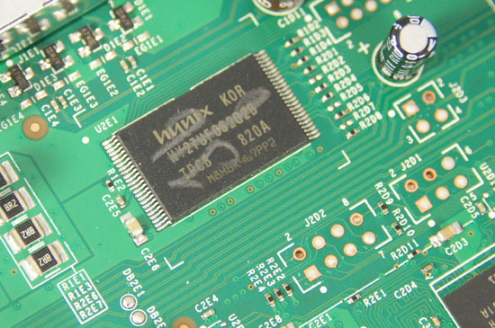

NAND

Flash memory

-
SMT socket that should work if you choose to remove yours: https://web.archive.org/web/20111206034431/http://www.emulation.com:80/cgi-cfm/insert_quantity.cfm?part_number=S%2DTSO%2DSM%2D048%2DA
Attached to Southbridge
NAND Points on Motherboard for FAT

NAND Points on Motherboard for SLIM
comming soon
Different Sizes
On different Motherboard Revision also different NANDs were used. Xenon-, Zephyr-, Falcon-, Opus- and some Jasper-Consoles (Retails) are using 16MB NANDs, other Jasper-Consoles (Retail),Arcade Bundles which came without a HDD, got a 256MB or 512MB NAND onboard. Only 64MB of these 256/512MB NAND are used for system files, the rest is used as an internal Memory Unit. All Development-/Demo-/Reviewer-/Test-Kits got at least a 64MB NAND. Depending on the NAND Size either Small- or Large-Block Flash Controllers get used.
Flash Controllers
The Flash Controller decides how to handle the NAND Memory. There are currently two types, the Old/Original SFC which handles the NAND with small block and the new SFC (Codename: Panda?) which handles the NAND as either small or large blocks.
Original SFC (pre-Jasper)
- 16MB NAND
| Type | Size |
|---|---|
| Block Size | 0x4000 (16KB) |
| Block Count | 0x400 |
| Page Size | 0x200 |
| Pages per Block | Block size / Page size |
| Raw Page Size (incl. SpareData) | 0x210 |
| Usable Filesystem-Size | 0x3E0 |
- 64MB NAND
| Type | Size |
|---|---|
| Block Size | 0x4000 (16KB) |
| Block Count | 0x1000 |
| Page Size | 0x200 |
| Pages per Block | Block size / Page size |
| Raw Page Size (incl. SpareData) | 0x210 |
| Usable Filesystem-Size | 0xF80 |
New SFC
- Small Block: 16MB NAND
| Type | Size |
|---|---|
| Block Size | 0x4000 (16KB) |
| Block Count | 0x400 |
| Page Size | 0x200 |
| Pages per Block | Block size / Page size |
| Raw Page Size (incl. SpareData) | 0x210 |
| Usable Filesystem-Size | 0x3E0 |
- Large Block: 256/512MB NAND
| Type | Size |
|---|---|
| Block Size | 0x20000 (128KB) |
| Block Count (non-MU) | 0x1000 |
| Page Size | 0x200 |
| Pages per Block | Block size / Page size |
| Raw Page Size (incl. SpareData) | 0x210 |
| Usable Filesystem-Size | 0x1E0 |
Simple Calculations
Have an address which is without ECC?
realaddr = (addr / 512) * 528 + (realaddr % (mod) 512 > 0 ? realaddr % (mod) 512 : 0);
This also works in reverse:
addr = (realaddr / 528) * 512 + (realaddr % (mod) 528 > 0 ? realaddr % (mod) 528 : 0);
Reading/Writing
The Flash can be written or read using a number of methods. If you have the old shader hack running the easiest is using lflash. You can also wire LPT directly to the flash using this diagram. As well, you can build your own USB SPI Flasher with this diagram and use these binaries. Flash the PicXboot.hex to your PIC, then use the programmer from this picflash to flash the picflash.hex to the PIC through USB in bootloader mode. Once the device is flashed, you can then install it using the drivers from NandPro or use TeamXecuters NANDX drivers.
{kind=link}
{kind=link}
Once wired you can read/write to the chip using software such as NandPro.
In software the NAND is mapped to memory address 0x80000200C8000000.
- You must be in real-mode to access the space
- You can read it byte by byte but it is recommended to follow the standard and read it in 4 byte blocks
Sectors
- 1: copyright notice, zeros, unencrypted numbers
- 2: encrypted data
@2MB filesystem, unencrypted, but content encrypted, config not
NAND File System
Informations about the Filesystem on the Xbox360 NAND Flash can be found here
Bad Blocks
Its possible that bad blocks appears when reading/writing to the NAND. For solving these look at the following page: Bad Blocks
Small flash chip close to CPU
Some 360s have a small flash chip near the CPU, some don't as seen in the following pictures.
No chip:

Here is a high-res picture of a premium box with the chip:

As discussed in this article on the xboxhacker.net forums, this appears to be a Atmel 25020 EEPROM. The chip model reads:
ATMEL524
25020AN
SU18
Datasheet can be found here.
This chip is a low power 2048 bit serial EEPROM according to the datasheet.
-
If the small chip near the CPU is removed the Xbox will boot up and function just fine [Darkmoon 360 experiments]
-
According to IBM the CPU has "An interface for a serial EEPROM in case patch logic configuration was needed during bring-up"
Small flash chip on front panel
There is another Atmel chip on the front panel:
{kind=link}
Atmel 528 serial EEPROM
This chip reads:
ATMEL528
24C04N
SU18
Datasheet can be found here
This chip is a low power 4096 bit serial EEPROM according to the datasheet.
Tools
360 Flash Tool, which is easy to find Xbox 360 NAND Editor by stoker25, open source and semi-complete, has code to do with bootloaders/keyvault/filesystem